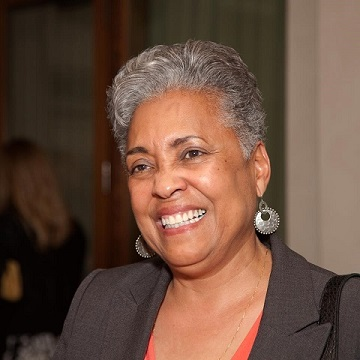
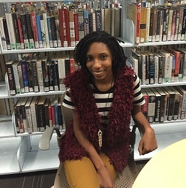
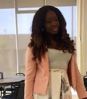
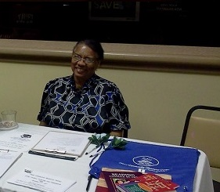
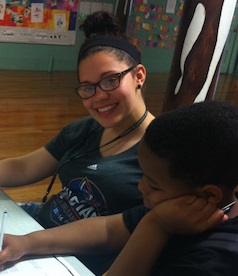
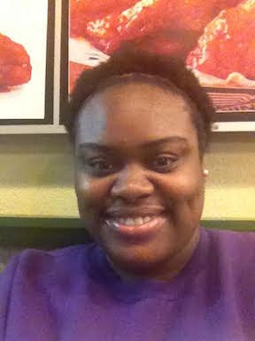
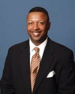
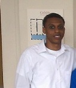

Hope Community Resource Center
Tutor Bios
The educational tutors available at Hope Community Resource Center.
Noreen W. Jacobs
Noreen W. Jacobs is the Executive Director Hope Community Resource Center, who has worked in the education field in the Public School System for many years. Ms. Jacobs is a New Orleans naivetÈ. Also a parent who lives in the New Orleans area and recognized the need for programs aimed at supporting local youth, especially after Hurricane Katrina. We aim to serve an underserved population of disadvantage children and families. The program, offer weekly and summer tutoring / mentoring, parent involvement workshops, parent training, and most of all resource for parents and children in the community. Ms. Jacobs truly believe that if parents and children are tough and have the resources they need will succeed.
Myra Marion Lewis
Myra Marion Lewis was Assistant Director at Dillard University’s Deep South Center for Environmental Justice with responsibility for all education and training grants. Dr. Lewis earned a Bachelor's degree in science education from Xavier University in 1967, and a joint master’s degree in education from Texas Southern University and University of Liberia, West Africa, where she served as a Peace Corps volunteer and volunteer leader from 1972-1975. She also earned a Master’s degree in counseling psychology in 1996 from the University of Florida-Gainesville. Dr. Lewis was a classroom teacher for many years, having ended her public school teaching career at the high school level as a science teacher for gifted children. In 1992, Dr. Lewis was named High School Teacher of the Year by the New Orleans Public School System. After completing a doctorate in counselor education with an emphasis on multicultural issues at the University of New Orleans in 2001, Dr. Lewis did adjunct teaching at Xavier University in psychology. She retired from her position at Dillard University in 2011.
Rakim Ambeau
Rakim Ambeau is a 21 year old psychology student studying at the Southern University at New Orleans. Ms. Ambeau is excited and grateful to be a part of the Hope Community Resource Center and truly enjoys working with the children, connecting with them in all aspects. Ms. Ambeau also plans to start another program to provide support and encouragement to help children who are struggling academically.
Charisse Becnel
My name is Charisse Becnel. I am a Junior at Southern University at New Orleans, majoring in Biology. I aspire to be an OB/GYN Doctor and own my clinic. I am a part of the National Institue of Science (NIS), Beta Kappa Xi (BKX), and also the NAACP at SUNO. My goals in life are to help as many people as I possibly can and give back to my community.
Alan Garner
Alan Garner received his certification from Southern University at New Orleans in lower elementary studies. He is currently a commercial pilot known as the Caribbean Pilot, flying in and out of Puerto Rico. While he enjoys tutoring and mentoring at Hope Community Resource Center since 2011, Mr. Garner is also currently advising people on how to make money on the Internet as well as developing products to teach young children and their parents how the laws of attraction can lead to more prosperity.
Mary McKinnon
Mary McKinnon's career began with her taking a job at a day care center near her home in New Orleans at eighteen years After working for about eighteen months, Ms. McKinnon was encouraged to begin attending a university for teacher training The summer after she completed high school, Ms. McKinno enrolled at Xavier University and began attending classes with a goal toward a degree in elementary education, specifically concentrating on early childhood education. After a few years attending Xavier University on a part-time basis, Ms. McKinnon graduated with a Bachelorís degree in elementary education and initially worked in Orleans Parish Schools as a substitute teacher. After finding the position somewhat inadequate, Ms. McKinnon moved with her husbandto another area located in the mid-south where she worked as an educator for about four years in various types of education programs. In the 1980ís I returned to New Orleans with her husband and three children and returned to teaching in Orleans Parish Schools. In 1987 after deciding she wanted to make a change in the type of students she wanted to teach, Ms. McKinnon completed the requirements for a Master's certificate in an education system known as Workshop Way, in which the behavior and attitudes of children were taken into consideration. She continued to teach in Orleans Parish Schools, but discovered the negative changes within the system and decided to teach pre-GED students. She taught for a period of two years, upgraded her computer skills, and finally resolved to teach in Jefferson Parish as a teacher in various assistant teacher Title One programs. Ms. McKinnon remained there until Hurricane Katrina and was relocated, during which time she worked with Americorp as a tutor in a classroom setting. In 2012 Ms. McKinnon did volunteer work at Norman Mayer Library where she met Ms. Noreen Jacobs at the Hope Community Resource Center. Once hearing about the Center's mission, Ms. McKinnon was impressed with Ms. Jacobs' passion and joined the Center as a tutor.
Yesmine Secrist
Yesmine Secrist is an education major at Xavier University. She is studying to become a teacher. She is a Hope Community Resource Center team leader at the ReNew Cultural Art Academy uptown.
Toshell Witt
Toshell Witt is a student at Dillard University, where she currently studies Biology. One of her chief aims is 'to be a blessing by giving without looking to receive" -Acts 20:35. Miss Witt has a number of initiatives on her tutoring agenda, which focus on educational enrichment by implementing and extending policies & programs of Hope Community Resource Center.
Brent Lilly Larry Mitchell Tommy Hoang
 